Social media application.
Dark gallery by default: the wordmark top-left with its clear space, Fraunces headlines ending with a full stop, one gold accent, the client’s own images with their wall labels — at every platform’s exact pixels.
- 19.1Profile images
- 19.2Covers and banners
- 19.3Instagram templates
- 19.4LinkedIn, X, YouTube, Pinterest templates
- 19.5Specifications and editing
One tile, every platform.
The symbol tile at each platform’s size, dark and light, generated by the logo exporter (02_LOGO_SYSTEM/Social_Profile) and copied into each platform folder of 08_SOCIAL_MEDIA.
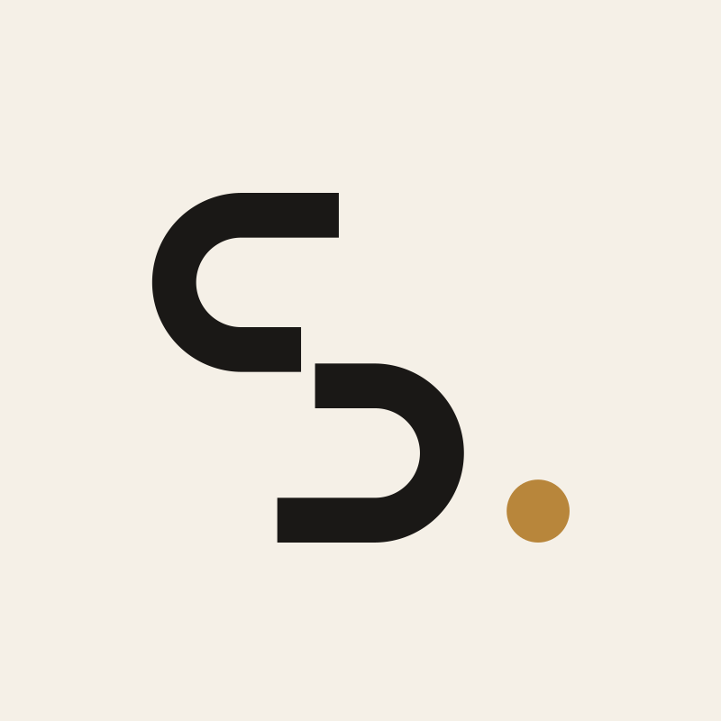
- The symbol tile, never the wordmark. Avatars are square and small; the S. with its point reads at 32 px where the wordmark does not.
- Dark by default. Upload the dark tile everywhere; the light tile exists for light interfaces and partner directories that insist on it.
- Upload the master size (1024 for Instagram, 720 for Facebook, 600 for Pinterest); the platform downsamples.
- Handles. @sanzeed everywhere (recommended; to be confirmed by Sanzeed). Display name: Sanzeed Mirza. Bio line: Experiential design you can walk into.
Inside the safe areas.
Every banner keeps its copy inside the platform’s safe area and clear of the avatar overlap; the --guide renders in each folder show the zones.
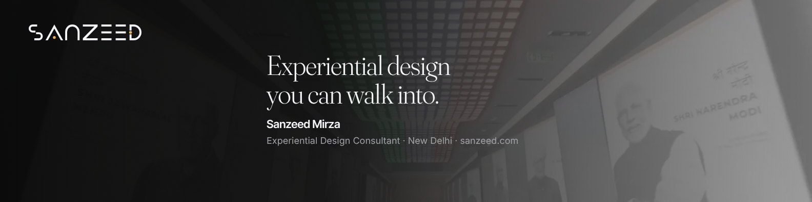
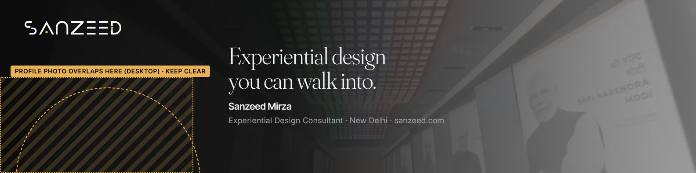


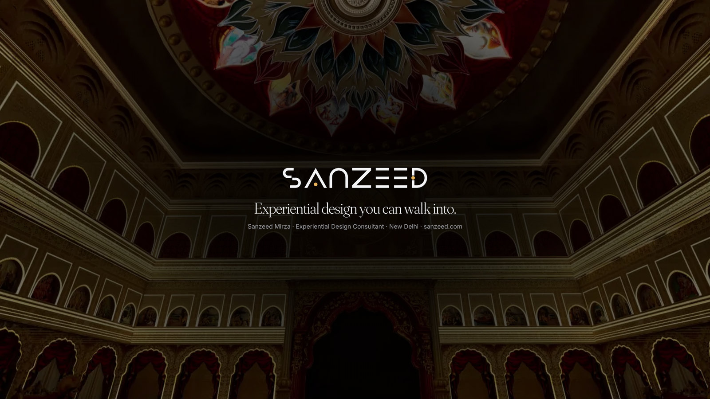


Posts, stories, highlights.
Square and 4:5 posts, stories inside the 1080×1420 safe band, highlight covers on the 24-grid monoline, reel covers with crop guides, and the grid preview. 08_SOCIAL_MEDIA/Instagram.
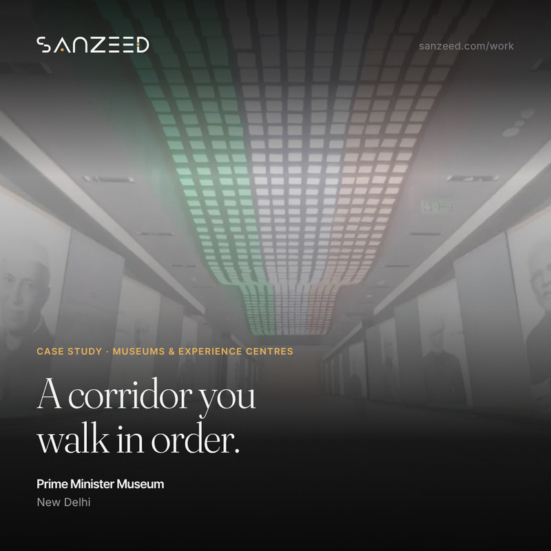
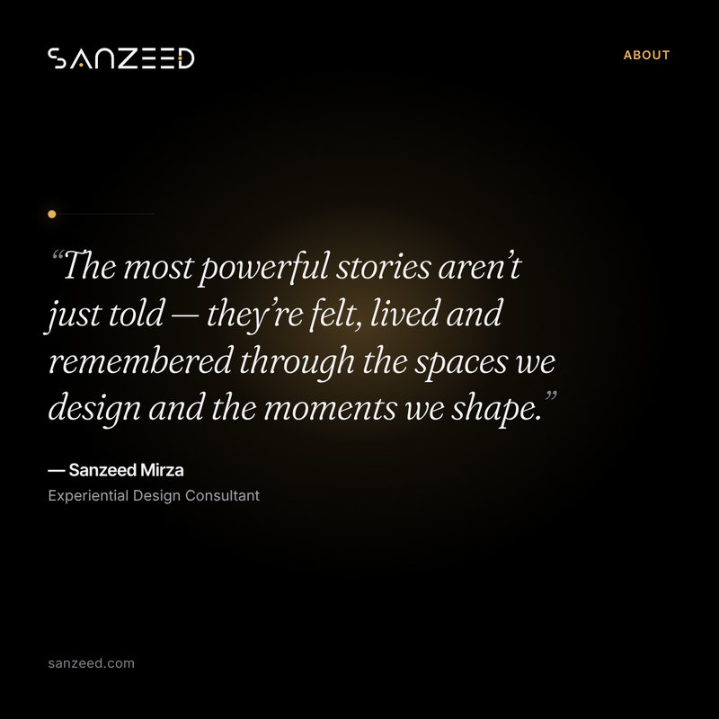
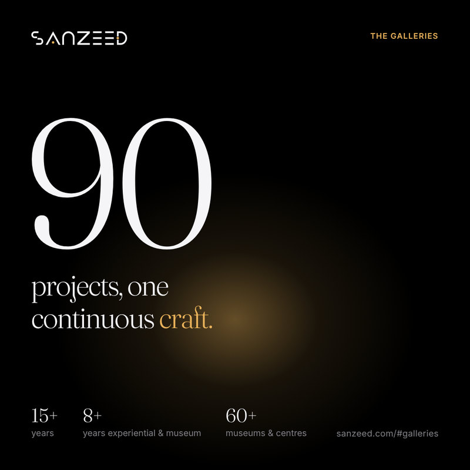
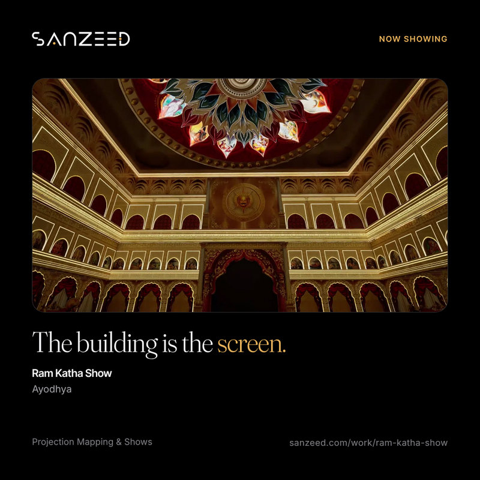

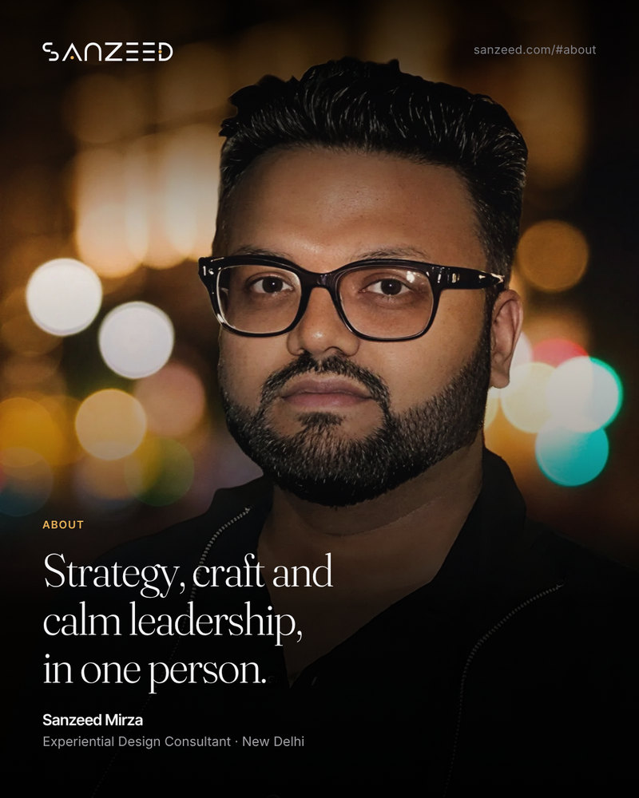
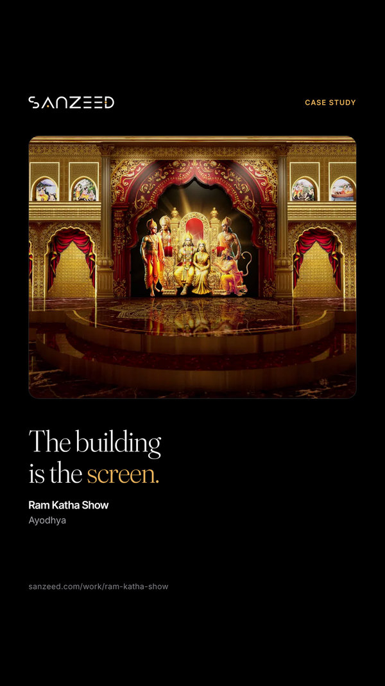
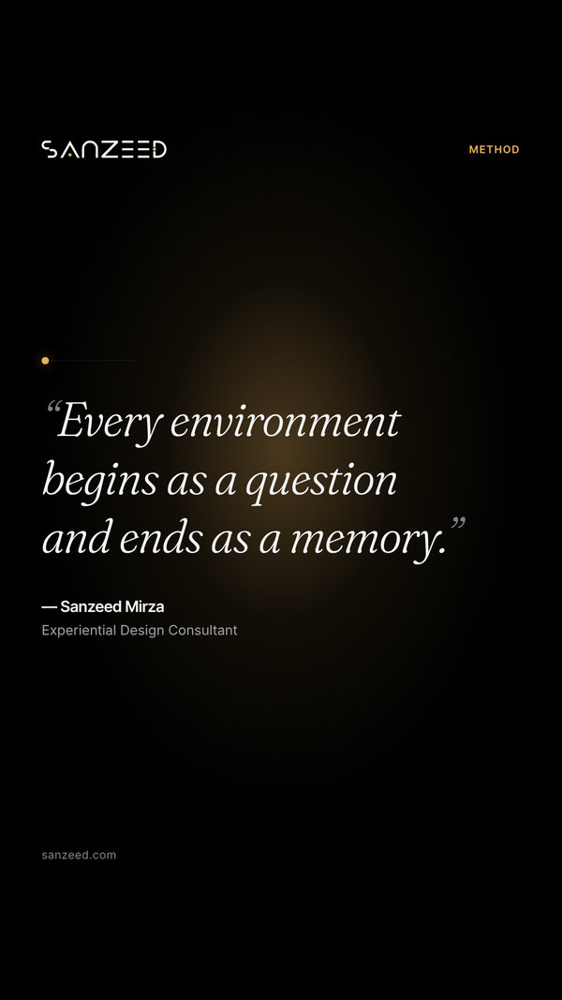


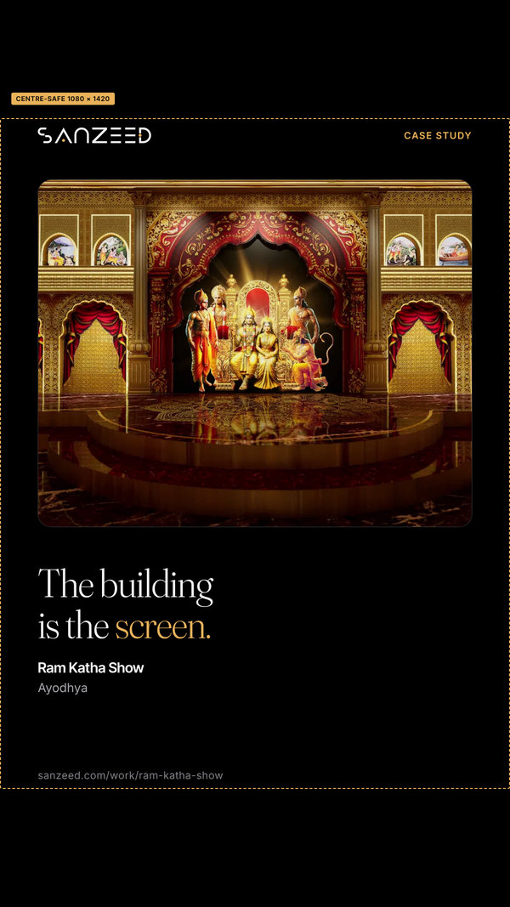


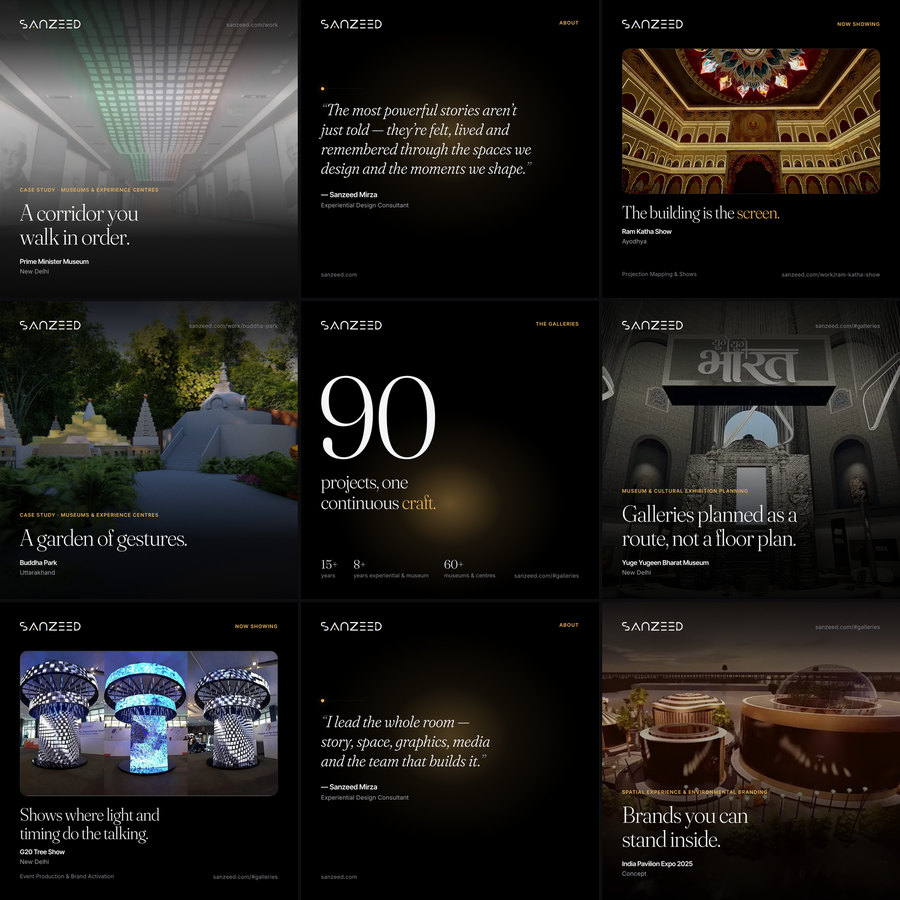
The same language, other rooms.
Post images, the five-page document carousel, pins, X posts and YouTube thumbnails — the four template families (project, quote, stat, method) at each platform’s pixels.
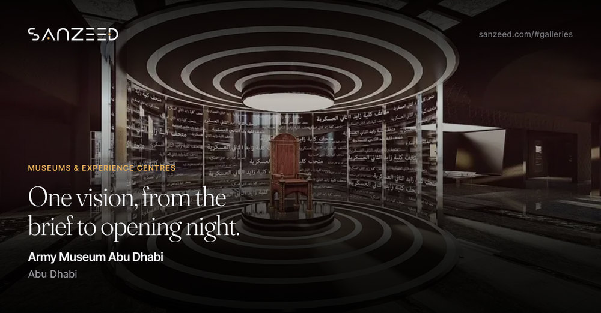


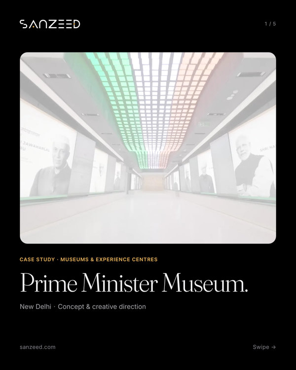


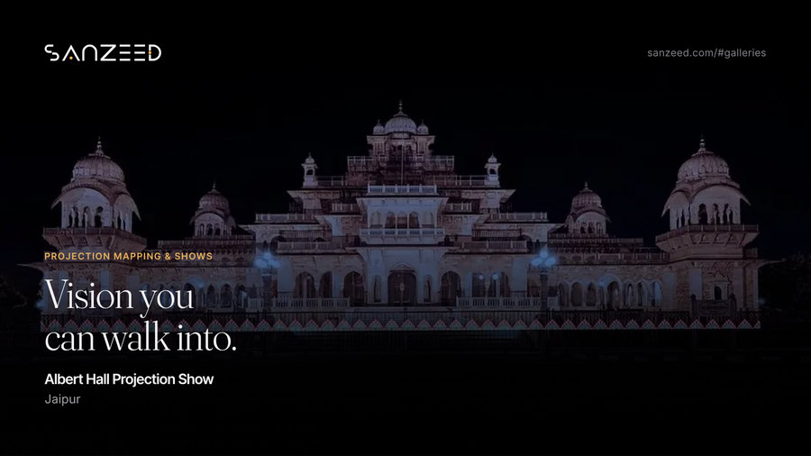


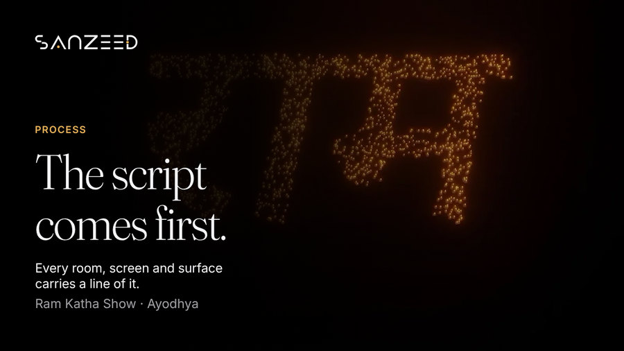

Exact pixels, checked before upload.
Brand kit §8. All 94 raster exports were measured at their exact platform pixels.
| Platform | Asset | Pixels | Notes |
|---|---|---|---|
| profile · post square / portrait / landscape · story / reel / highlight | 320 (upload 1024) · 1080×1080 / 1080×1350 / 1080×566 · 1080×1920 | circular crop; feed shows 4:5 largest; text inside the 1080×1420 centre band | |
| profile · cover · event cover | 320 (upload 720) · 1640×624 (safe 1250×463) · 1920×1005 | page cover displays 820×312; mobile crops the sides | |
| personal profile / banner · company logo / banner · post | 400 · 1584×396 · 300 · 1128×191 · 1200×627 or 1080×1080 | profile photo overlaps bottom-left of the banner on desktop | |
| YouTube | profile · banner · thumbnail · end screen | 800 · 2560×1440 (safe 1546×423) · 1280×720 · 1920×1080 | thumbnail ≤ 2 MB |
| X | profile · header · post | 400 · 1500×500 · 1600×900 | avatar overlaps bottom-left of the header |
| profile · pin | 165 (upload 600) · 1000×1500 (2:3) | ||
| WhatsApp Business | profile | 640×640 | |
| Open Graph / Twitter card | share image | 1200×630 | key content in the centre 1200×600 |